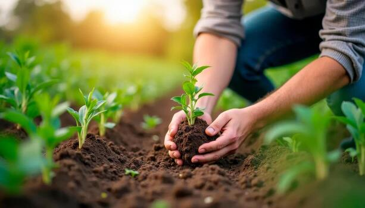

Guía Básica
5 Pasos para iniciar tu primer huerto urbano
Descubre los cultivos más resistentes para principiantes y cómo aprovechar la luz solar en balcones o espacios pequeños.
Leer másAprende técnicas orgánicas, cuidado de plantas y recetas saludables directas de nuestro huerto.

Descubre los cultivos más resistentes para principiantes y cómo aprovechar la luz solar en balcones o espacios pequeños.
Leer más
Aprende a preparar abono orgánico rico en nutrientes reutilizando los restos de frutas y verduras de tu cocina.
Leer más
Evita el exceso de agua y protege tus hortalizas de manera natural sin utilizar pesticidas químicos dañinos.
Leer más